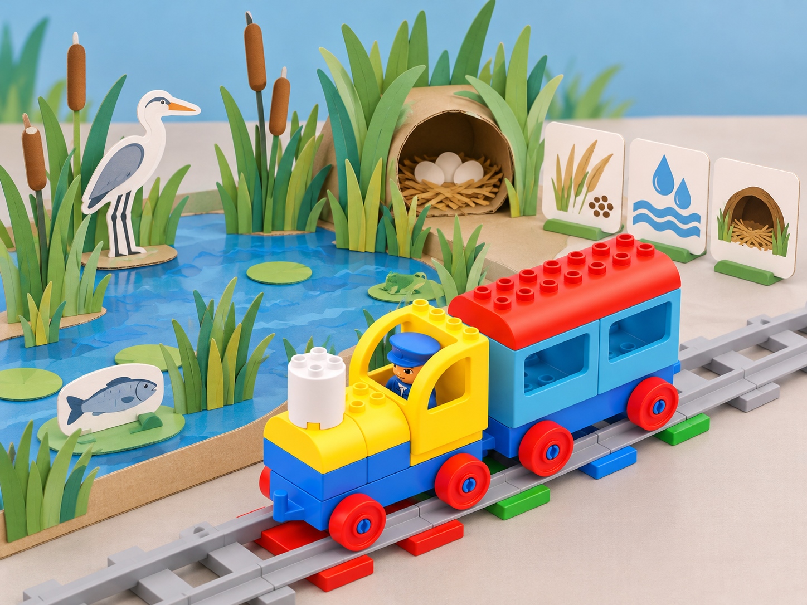
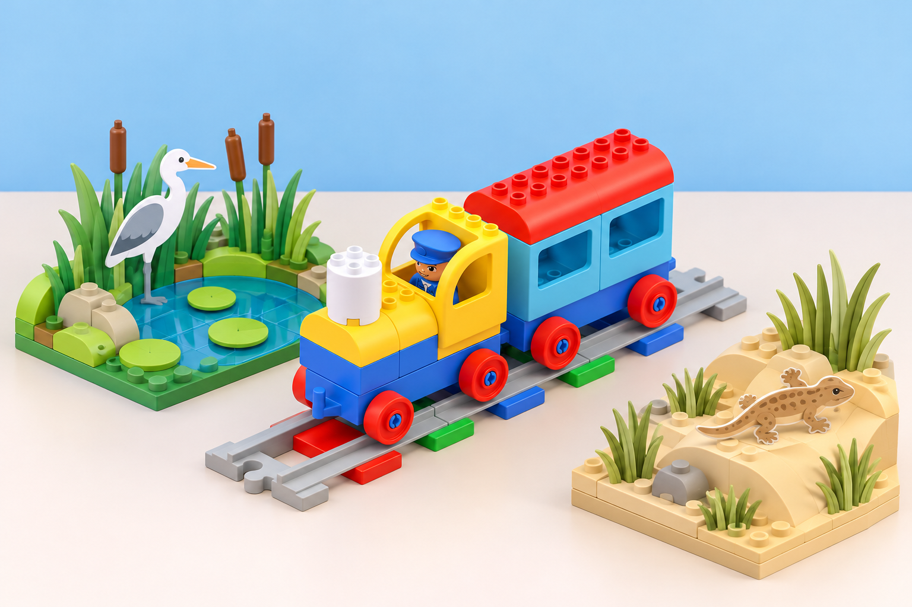

Hàbitats vius de l’Albufera
🏷️ Biodiversitat i cura de l’entorn
🌱 Situació, repte i intenció
🎯 Aprenentatges i vocabulari
- Identificar necessitats bàsiques dels éssers vius i relacionar-les amb elements d’un hàbitat.
- Comparar dos escenaris de maqueta i explicar quins recursos o refugis hi falten.
- Representar amb una ruta i una seqüència d’accions un canvi possible en l’entorn modelat.
- Distingir una maqueta didàctica de l’observació científica i proposar una forma responsable de documentar-la.
🧰 Materials i preparació
Prepareu el tren i les vies Coding Express, blocs d’acció presents al set, figures de paper d’éssers vius, icones d’aigua, aire, refugi i aliment i cartolina per fer paisatges. LEGO presenta la unitat original per a Coding Express i STEAM Park: les nostres activitats funcionen amb el tren i materials corrents, sense necessitar el segon set. No captureu ni alimenteu animals, no arranqueu plantes i no feu visites de camp sense autorització i supervisió.
📅 Seqüència didàctica
La lliçó de necessitats es repeteix en una sessió de plantes i una altra d’animals, com proposa el pla oficial. La darrera lliçó pot repartir-se en dos blocs per donar lloc a la recerca i al missatge públic.
Necessitats i desitjos de Trollie · Trollie: My Basic Needs (45–60 min)
Fase 1 · Activem i prediem
Activeu els conceptes necessitat, desig, ésser viu i sobreviure amb un conte curt i el personatge original Trollie, fet de cartó o peces corrents i col·locat damunt del tren. Pregunteu què necessita el personatge per a viure.
Fase 2 · Explorem i construïm
Cada parella construeix una cosa que cobrisca una necessitat humana —aigua, aliment, roba o refugi—. La classe agrupa les creacions per categories, les compta i compara quina n’ha generat més i menys.
Fase 3 · Expliquem i registrem
Afegiu les dades a un mural visual que continuarà en les sessions següents. Ordeneu els models en inici, nus i final d’una història; munteu una via recta comptant les peces i feu una primera passada sense maons d’acció.
Fase 4 · Apliquem i millorem
Proveu els maons roig, verd i blau del set. Observeu i anoteu com respon el tren a cada color i trieu el senyal que millor marca la parada narrativa, sense atribuir al maó funcions que no hàgeu comprovat. Torneu a contar la història incorporant un desig, com veure una pel·lícula.
Fase 5 · Comprovem i reflexionem
Observem una planta i el seu entorn · Plant and Animal Needs (30–45 min)
Fase 1 · Activem i prediem
Trieu una zona segura i accessible del pati o entorn pròxim; si no és possible eixir, useu una fotografia o un vídeo adequat. Predigueu quines característiques observables del lloc poden ser importants per a una planta concreta.
Fase 2 · Explorem i construïm
Dibuixeu la planta i les característiques observables del lloc, sense tocar-la ni arrancar-la. En parelles, construïu la planta i els trets del medi que una observació o font seleccionada relaciona amb la seua supervivència.
Fase 3 · Expliquem i registrem
Expliqueu amb paraules espacials —al costat, davant, darrere— on viu i què necessita. Incorporeu les necessitats de plantes al mural i compteu cada categoria amb imatges i paraules.
Fase 4 · Apliquem i millorem
Compareu dos models amb una semblança i una diferència. Penseu què canviaria si la planta es traslladara a l’interior i reviseu la representació amb la informació observada o consultada.
Fase 5 · Comprovem i reflexionem
Repetim la investigació amb un animal · Plant and Animal Needs (30–45 min)
Fase 1 · Activem i prediem
Trieu un animal observat a distància des d’una zona autoritzada o en un vídeo o fotografia d’un entorn natural. Predigueu quines característiques del lloc poden ser rellevants. No perseguiu, captureu, toqueu ni alimenteu fauna.
Fase 2 · Explorem i construïm
Registreu amb dibuix les característiques del lloc i modeleu l’animal i un o dos elements del seu hàbitat que una font adequada identifica com a rellevants.
Fase 3 · Expliquem i registrem
Expliqueu què necessita l’animal i quina observació o font ho sosté. Afegiu les necessitats animals al mateix mural que les de plantes i persones i compteu-les.
Fase 4 · Apliquem i millorem
Busqueu patrons entre les categories i reviseu el model quan la font o l’observació aporte una informació nova. No afirmeu que totes les espècies necessiten exactament el mateix.
Fase 5 · Comprovem i reflexionem
Un ésser viu modifica el seu entorn · Plants and Animals Change the Environment (30–45 min)
Fase 1 · Activem i prediem
Reviseu el mural i parleu de necessitats que poden relacionar plantes i animals. Predigueu quins canvis pot provocar un ésser viu al seu entorn i quines proves podríem observar.
Fase 2 · Explorem i construïm
Observeu un canvi documentat o visible des d’una zona segura —per exemple, arrels que alcen un paviment o un niu observat de lluny—. Dibuixeu la prova abans de proposar-ne la causa.
Fase 3 · Expliquem i registrem
En parelles, construïu què hi havia, quin canvi s’hi aprecia i quina necessitat podria satisfer l’ésser viu. Una altra parella pregunta què representa el model que no es pot veure directament.
Fase 4 · Apliquem i millorem
Inventeu una criatura només com a exercici de modelatge i expliqueu com podria modificar l’entorn per cobrir una necessitat. Compareu-ho amb l’exemple observat, deixant clar que és una invenció.
Fase 5 · Comprovem i reflexionem
Investiguem i visitem hàbitats diferents · Journey to Different Habitats (45–60 min)
Fase 1 · Activem i prediem
Useu llibres, imatges i materials seleccionats sobre espais pròxims —com l’Albufera, els arrossars o la Devesa—. Assigneu a cada grup una planta, un animal i un hàbitat per investigar. Predigueu quines relacions espereu trobar.
Fase 2 · Explorem i construïm
Anoteu amb dibuixos i paraules què necessita cada ésser viu i quins trets del medi l’ajuden. Investigueu si una planta contribueix a alguna necessitat de l’animal.
Fase 3 · Expliquem i registrem
Distingiu informació de la font i inferència pròpia. Construïu models que expliquen les relacions i una via amb diverses parades-hàbitat; col·loqueu els models al llarg del recorregut.
Fase 4 · Apliquem i millorem
Prepareu la seqüència de maons perquè el tren s’ature a cada lloc. Els passatgers visitants fan de naturalistes; cada grup presenta l’hàbitat i respon com es relacionen la planta i l’animal. La ruta és una exposició, no una afirmació que les espècies conviuen o es desplacen entre llocs contigus.

Fase 5 · Comprovem i reflexionem
Investiguem un problema i comuniquem una solució · People Helping the Environment (90 min)
Fase 1 · Activem i prediem
Amb textos, fotografies i observacions adequades, investigueu accions humanes que afecten l’entorn: residus que poden arribar a un desguàs, consum de materials o canvis en una zona verda. Trieu un problema acotat que el grup puga explicar.
Fase 2 · Explorem i construïm
Si només disposeu d’un cas documental o d’una maqueta, indiqueu-ho i no el presenteu com un problema mesurat al centre. Feu recerca compartida i registreu la font.
Fase 3 · Expliquem i registrem
Descriviu qui o què es veu afectat i formuleu el problema amb paraules pròpies. Establiu un criteri observable per a valorar una possible solució i anoteu-ne una limitació.
Fase 4 · Apliquem i millorem
En parelles, construïu amb Coding Express i materials escolars un model de solució que reduïsca l’impacte. Presenteu les idees a altres grups, rebeu preguntes i reviseu el model o la proposta.
Fase 5 · Comprovem i reflexionem
Feu un cartell, missatge públic o fitxa il·lustrada amb el problema, l’evidència, la solució i una acció viable.
🧪 Evidències i avaluació
Useu retorn formatiu durant tota la seqüència: S1 identifica necessitats, diferencia necessitat/desig i descriu funcions dels maons; S2–S3 identifica necessitats de plantes i animals, trets ambientals i comunica un model; S4 relaciona un canvi amb una necessitat i sosté l’explicació en una observació/font; S5 representa relacions entre plantes, animals i lloc, i planifica una ruta amb parada a cada hàbitat; S6 participa en recerca compartida, defineix un problema i comunica una solució. Recolliu dibuixos, recompte, models, guions de naturalista i missatge final.
Valoreu l’argument i l’evidència, no que el model «funcione» o tinga acabat estètic.
♿ Participació, accessibilitat i seguretat
Useu figures grans amb textures diferents, estacions de via ben separades i pictogrames per anticipar cada parada. Es pot participar triant les peces, relatant, movent una fitxa per la via o registrant l’explicació de l’equip. Les fotografies o exemples es poden donar al grup si l’eixida a l’entorn no és accessible.
🔗 Referents i adaptació
Adaptació de les cinc lliçons del pla docent LEGO Education Needs of Plants and Animals: Trollie: My Basic Needs; Plant and Animal Needs (repetida per a plantes i animals); Plants and Animals Change the Environment; Journey to Different Habitats; i People Helping the Environment. Es preserven observació, recerca compartida, models, recompte, narració, prova de maons d’acció, via amb parades i comunicació pública. El material de STEAM Park se substitueix per materials de classe, i aquesta adaptació queda identificada.
El context, els exemples, les preguntes i la il·lustració són propis. Els materials del Parc Natural de l’Albufera poden orientar la selecció de fonts locals; cada observació i relació d’espècies s’ha de verificar amb la font triada per l’aula.